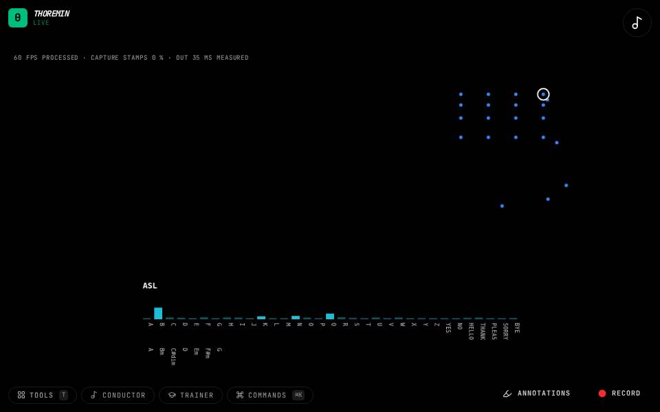

Instruments › Sign instruments
ASL Chords

What to do
- Fingerspell the letters A to G.
- Each letter plays the chord of the key rooted on that letter.
- The chord's name shows under the sign.
Letters play chords: in D major, F plays F-sharp minor and C plays C-sharp diminished, because the key's accidentals apply.
How it works
The recognised letter is turned into the chord of the key, then voiced like the face chords. The key, sound and voicing are the same settings as the face chords (Face); the Sign language section also has the key, the sound and the volume.
Its settings: Sign language, Sound. Every knob: the manual.